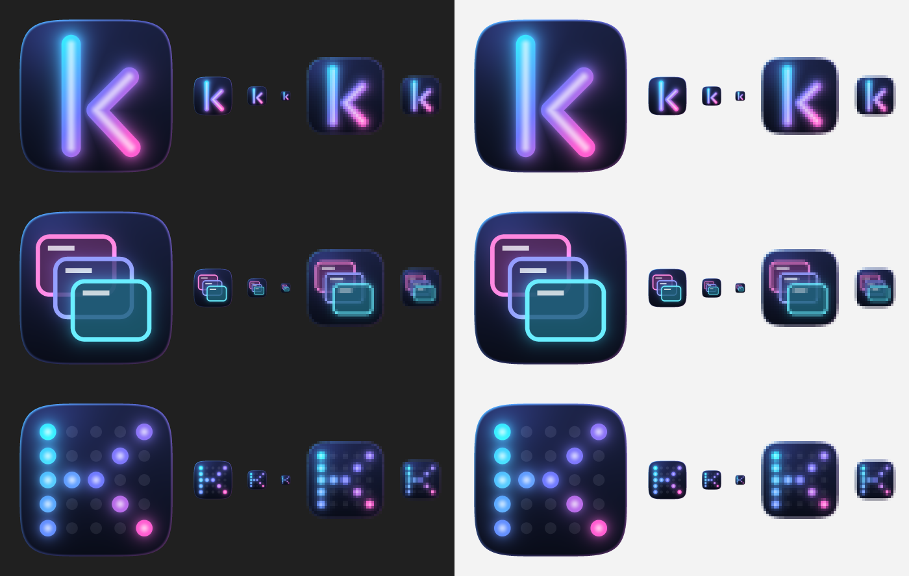
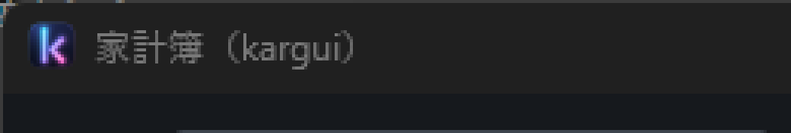
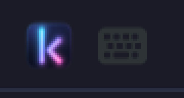

kargui 開発レポート ・ 第 19 章
既定のアイコン
アプリがアイコンを渡さない時、これまでは OS の無地のアイコンが出ていました。作者は寝る前に「無地のアイコンは寂しいので、kargui の既定のアイコンが欲しい。変えることも、アイコンを出さないこともできるように。現代的で、少し抽象的で、未来っぽい絵がいい」と頼みました。この章では、3 つの案を計算で描いて比べた結果、画像のファイルを読まずに大きさごとに描く方法とその時間、OS ごとの出し方を紹介します。後半では、検証機で見つけた 2 つの落とし穴を書きます。
この章で分かること
- アイコンの案を、小さい大きさで読めるかで比べる方法
- 画像のファイルを使わず、点までの距離で絵を描く方法
- 要る大きさだけを描く理由（256 画素は 61 ms かかる）
- OS ごとのアイコンの渡し方の違い
- tar で写したファイルの時刻が、組み立てを狂わせた話
3 つの案
アイコンは、題の帯では 16 画素ほどの小ささで表示されます。大きい絵がきれいでも、小さくして読めなければ使えません。3 つの案を同じ地（濃い紺の角丸の四角）の上に描き、256・64・32・16 画素で並べて比べました。どの案も、どこかのロゴをまねずに、kargui の名前（軽い ＝ karui）と「光」から作りました。

| 案 | 形 | 16 画素 | 名前とのつながり |
|---|---|---|---|
| A 光の k（選んだ） | 光の管で描いた小文字の k。縦の線と、くの字の腕を少し離す | k と読める | 軽い線と光で、karui を表す |
| B 重なる窓 | ガラスの窓を 3 枚ずらして重ねる | 32 画素以下で線が混み合う | GUI の窓。ただし、よくある形 |
| C 光の粒の k | 5 × 5 の粒のうち、K の形の粒だけを光らせる | 粒がつぶれる | 未来っぽさは一番強い |
16 画素でも読めることを一番重く見て、A を既定にしました。線の色は、水色から青紫、桃色へ移ります。ほかの案の描き方も残してあるので、作者が別の案を選べば入れ替えられます。
画像のファイルを使わずに描く
アイコンを PNG のファイルにして kargui に入れる方法もあります。ただ、kargui の画像の読み込み（Image::from_bytes）は Windows の機能を使っていて、Linux では今は読めません。また、1 枚の絵を OS に縮めさせると、16 画素では線がにじみます。そこで、要る大きさごとに、計算で描くことにしました。
- 地: 角の丸みがなめらかな四角（超楕円。x と y の 5 乗の和が 1 以下の所）。上から下へ紺を暗くし、左上に淡い光を足す。
- k: 縦の線と、くの字の 2 本の腕を、線分として持つ。点から一番近い線分までの距離が線の太さの半分より近ければ、線の中。外では、距離が遠いほど光を薄くする。
- 芯: 線の中心に近いほど白に近づけ、光の管のように見せる。
- 縁をなめらかにする: 1 画素を 8 × 8（48 画素以下）か 4 × 4（64 画素以上）の点に分け、点の色を平均する。
48 画素より 64 画素の方が速いのは、1 画素を分ける点の数が 64 個から 16 個に減るためです。Windows で要るのは、大きいアイコンと小さいアイコン（この PC では 32 画素と 16 画素）の 2 枚で、合わせて約 5 ms です。256 画素を 1 枚描くと 61 ms かかるので、大きい絵を 1 枚描いて縮める形にはしませんでした。
書き方
アプリは何も書かなくても、kargui のアイコンが出ます。
| 設定 | 窓のアイコン | トレイのアイコン（画像が無い時） |
|---|---|---|
| 何も書かない | kargui のアイコン | kargui のアイコン |
| options.icon に画像 | アプリの画像 | アプリの画像 |
| options.default_icon を false | OS の無地のアイコン | 赤い角丸の四角（前の既定） |
トレイは、アイコンが無いと通知領域に何も出せません。そのため、既定のアイコンを切ったアプリでも、トレイには前の赤い四角を出します。
OS ごとの出し方
- Windows: 拡大率に合わせた大きいアイコンと小さいアイコンの大きさ（
GetSystemMetricsForDpi）で 2 枚描き、窓に渡す。窓を閉じる時に片付ける。 - X11: 64 画素の絵を、窓のアイコンの欄（_NET_WM_ICON）に入れる。ウィンドウマネージャーが必要な大きさに縮める。
- Wayland: 窓のアイコンは、合成がアプリのデスクトップ ファイルから決める。kargui が変えられるのはトレイのアイコンだけ。


検証機の X11 では、xprop で窓の _NET_WM_ICON を読み、64 × 64 の絵が入っていることを確かめました。
検証機で見つけた 2 つの落とし穴
記録する前の変更は、tar で検証機へ写して試しています。今回はここで 2 つのことが起きました。
| 起きたこと | 原因 | 直し方 |
|---|---|---|
| 見本の組み立てが「Options に default_icon が無い」で落ちた | tar は元のファイルの時刻を保つ。手元で直した時刻が、検証機で前に組み立てた時刻より古く、cargo が kargui を組み立て直さなかった | 写す時に時刻を今にする（tar xmf） |
| clippy が、試験の 1 行で止まった | 検証機の Rust は手元より新しく、新しい注意（chunks_exact より as_chunks を使う）が出た | as_chunks に書き直した |
cargo は、ファイルの時刻が前の組み立てより新しいかで、組み立て直すかを決めます。tar や cp -p で時刻を保ったまま写すと、写した側では「前より古いファイル」に見え、変更が組み立てに入らないことがあります。試験の組み立ては直っていたのに、見本の組み立てだけが古いままで、誤りの理由が分かりにくくなりました。
作者の手の確かめ
第 18 章と同じ手の確かめで、家計簿の見本を 2 回開いてもらいました。
| 手順 | 記録 |
|---|---|
| ふつうに開く | window.icon は set=true from=kargui |
| --no-default-icon で開く | window.icon は set=false from=system（OS の無地のアイコン） |
| 異常の数 | panic 0、窓の処理の二重の呼び出し 0、誤り 0 |
数
アイコンで足した試験は 3 個です（描いた絵 2、見本の引数 1）。描いた絵の試験は、角が透明で、地が暗く、縦の線の所が明るいことを、64 画素と 16 画素で確かめます。公開の項目の説明は 633 から 634 に増え、動く例（447）と説明の中の動く例（735）は変わりません。描く処理（logo.rs）は 160 行です。記録 52c6636 は 13 のファイルを変え、228 行を足して 19 行を消しています。
CI
記録 52c6636 は、第 18 章の記録と一緒に、作者の「送って」で GitHub に入りました。CI は Windows・Linux・macOS で 1 回目から通りました。
次の段階
アプリの仕組みの次は、多言語です。アイコンでは、Wayland の窓のアイコン（合成にアイコンを渡す新しい取り決め）と、トーストの名前の横に出るアイコンを、まだ作っていません。